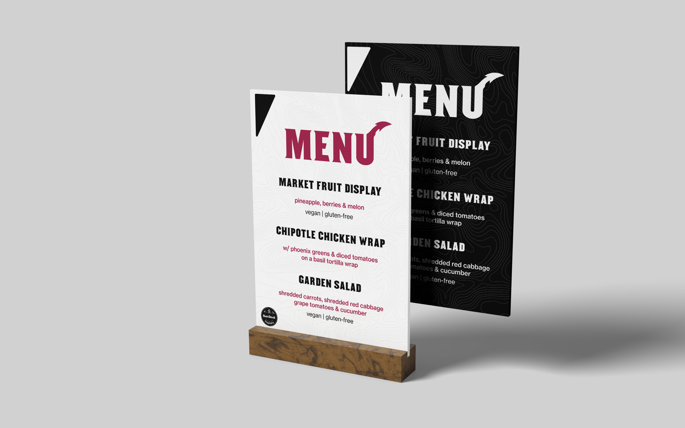
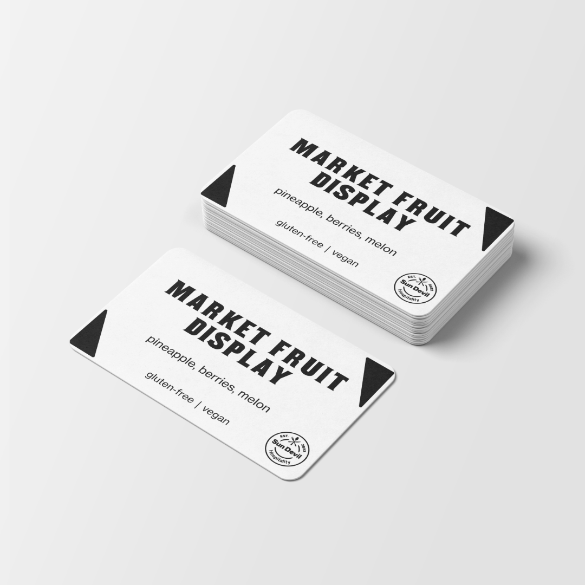
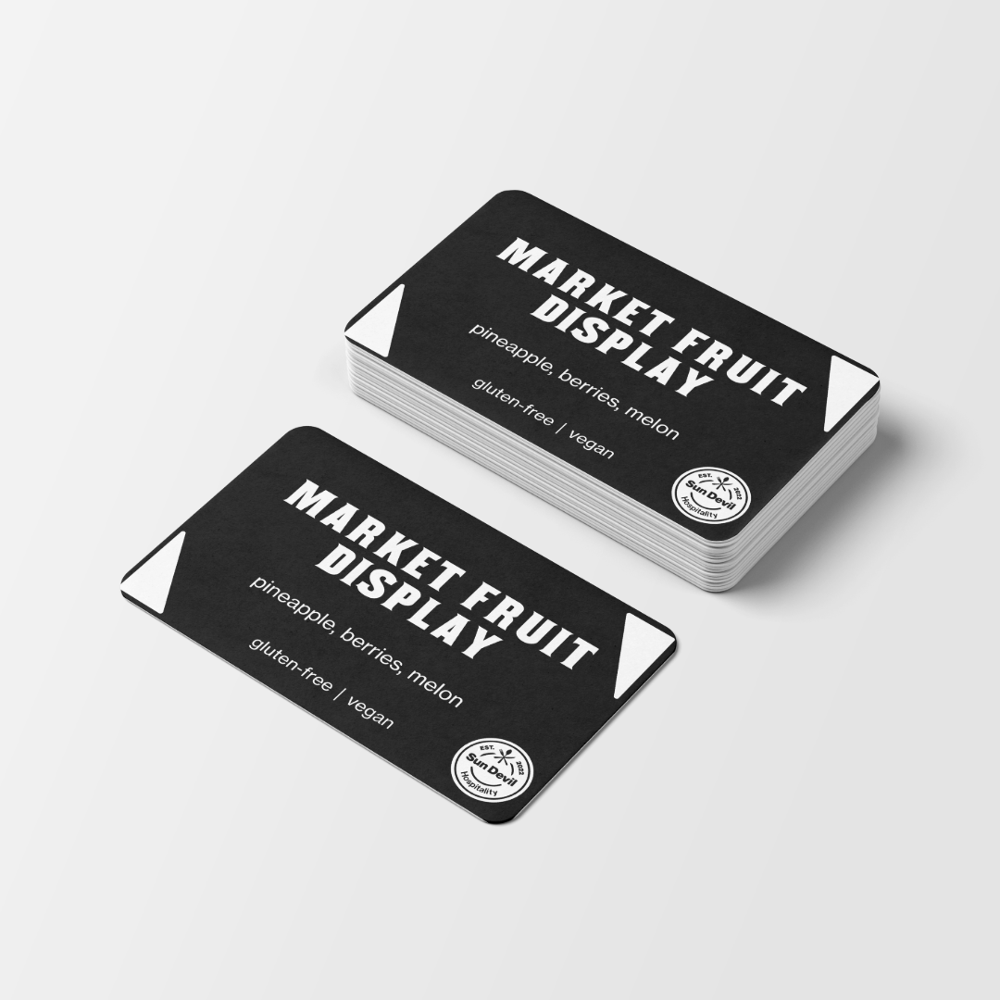

ASU Athletics · 2025 Football Season · Catering Signage
ASU Football Season:
Catering Menu Signage
Allergen-aware catering signage for premium game-day experiences.
I supported Aramark’s catering operations during the 2025 ASU football season by designing, producing, and implementing game-day menu signage and branded graphics, with attention to allergen and dietary information across guest-facing materials.
- My role
- Signage development & production
- Created for
- Aramark catering operations
ASU Athletics · 2025 football season - Deliverables
- Buffet menu signage · Individual buffet cards · Branded graphics


My role
From menu information
to the guest experience.
I led the development of catering signage for ASU Athletics events: collecting menu and dietary information, organizing content, and creating visually engaging buffet signage.
The finished materials helped guests identify dishes, understand dietary options, and navigate the buffet while supporting a consistent premium hospitality experience.
What I brought together
- Menu contentOrganized dish names, descriptions, and dietary information into a clear hierarchy.
- Allergen-aware communicationCarried dietary information through the larger menu signs and individual buffet cards.
- Coordinated designUsed consistent typography, branded graphics, and light and dark variations across the signage.
The signage system
Consistent at every scale.
Large buffet signs and individual dish cards share the same visual language. Prominent dish names lead into ingredient descriptions and dietary labels, keeping useful information close to the food.




Design & production
Designed, printed,
and ready for game day.
I used Adobe Illustrator and Adobe Creative Cloud to develop the buffet signage and branded graphics, then produced the larger signs using Epson software and the Epson SureColor P9000. I also used Edikio software to create and print individual buffet cards.
- Collect & organizeGather menu and dietary information and prepare it for guest-facing layouts.
- Design & adaptDevelop the visual system and apply it to large menu signs and individual cards.
- Produce & implementPrint the signage and buffet cards for game-day catering operations.
Premium hospitality
Clear information.
A cohesive presentation.
A coordinated set of menu signs, branded graphics, and buffet cards brought dietary information and consistent presentation to ASU’s premium game-day catering experience.
Created in support of Aramark’s catering operations during the 2025 ASU football season. My role: signage development, production, and implementation.